JavaScript
Best Practices
for not JavaScript programmers

JavaScript: The World's Most Misunderstood Programming Language
- C-like syntax
- However has more in common with functional languages like Lisp or Scheme than with C or Java.
- Arrays instead of lists and objects instead of property lists.
- Functions are first class. It has closures
Think more functional when writing JavaScript
http://www.nicollet.net/2011/10/functional-programming/
http://seanhess.github.com/2012/02/20/functional_javascript.html
Stop writing classes
http://www.youtube.com/watch?v=o9pEzgHorH0
Don't try to work with JavaScript as if it's language it is not
Closure - lexical scope
No closures involved:
function add(x, y) {
return x + y;
}
function add5(y) {q
return add(5, y);
}
function add10(y) {
return add(10, y);
}
console.log(add5(2)); // 7
console.log(add10(3)); // 13With a closure:
function makeAdder(x) {
return function(y) {
return x + y;
};
}
var add5 = makeAdder(5);
var add10 = makeAdder(10);
console.log(add5(2)); // 7
console.log(add10(3)); // 13Closure means encapsulation
Prototypal inheritance
JavaScript does not have classes
Instead of object-class we have object-object relationship
var Animal = function (dateOfBirth) {
this.dateOfBirth = dateOfBirth;
};
Animal.prototype = {
dateOfBirth: null,
say: function (what) { console.log(what); },
getAge: function () {
return Math.floor((Date.now() - this.dateOfBirth) /
(1000 * 60 * 60 * 24 * 365.25));
}
};
var Dog = function (dateOfBirth, breed) {
Animal.call(this, dateOfBirth);
if (breed) this.breed = breed;
};
Dog.prototype = Object.create(Animal.prototype);
Dog.prototype.say = function () {
Animal.prototype.say.call(this, 'woof woof');
};
Dog.prototype.breed = 'mongrel';
var sparky = new Dog(new Date('2008-02-23'), 'Terrier');
sparky.name = 'Sparky';
console.log(sparky.getAge()); // 4
console.log(sparky.breed); // 'Terrier'
console.log(sparky.name); // 'Sparky'
console.log(sparky instanceof Animal); // true
console.log(sparky instanceof Dog); // true
delete sparky.breed;
console.log(sparky.breed); // 'mongrel'
delete Dog.prototype.breed;
console.log(sparky.breed); // undefined
There are no private or protected instance properties.
Convention is to start such with underscore:
Animal.prototype._foo = function () {
// .. private foo
}It's verbose to call parent methods:
Dog.prototype.say = function () {
Animal.prototype.say.call(this, 'woof woof');
};It's gonna be fixed in future version of JavaScript with 'super' keyword
In a meantime we can help ourselves with following util: https://gist.github.com/2394476
var Dog = extend(Animal, function (_super, dateOfBirth, breed) {
_super(this, dateOfBirth);
if (breed) this.breed = breed;
}, {
breed: 'mongrel',
say: function (_super) {
_super(this, 'woof woof');
}
});JavaScript Ecosystem
- EcmaScript (language itself)
- DOM
- HTML5
- WebStorage
- ApplicationCache
- etc.
Get to know what's part of a language and what's part of external API
EcmaScript
- Know it's API and use it extensively
- Know the good and the bad parts: JavaScript: The Good Parts by Douglas Crockford
- Some implementations are broken or incomplete, fix them: https://github.com/kriskowal/es5-shim
- Underscore library is a good place to look for complimentary functions
DOM
Very verbose and not that friendly API
If you have problem with it try jQuery
jQuery is great choice when you need some sophisticated HTML widgets or effect
Do not use jQuery as an aid for language itself (EcmaScript) it's bad choice for that
Code organization
Separate your code into modules
Use Module pattern:
MYNAMESPACE.module = (function() {
var privateVar = '..';
var privateMethod = function (args) {
// ...
};
return {
publicProperty: '..',
publicMethod: function () {
// ...
}
};
}());Similarly good way is to write CommonJS/Node.js style modules and pack them with modules-webmake
Don't forget the tests
There are tons of test engines for JavaScript.
Try Buster.js, when configured it automatically runs tests in browsers and shows results in a console.
If your BDD fan you may like Jasmine